Continuous integration (CI) and Continuous delivery and deploy (CD) is an approach to developing complex custom solutions using the Develop > Test > Production cycle.
With this method of development, a solution goes through three stages: it is created, tested, and deployed for the end users. A separate company is assigned for each stage. It is registered in its environment:
- Dev company. For the development stage.
- Test company. For testing the developed solution.
- Prod company. For end-user operation.
The solution moves to the next stage when it is exported to a company that serves as a different environment.
Low-code CI/CD allows you to develop custom solutions in short iterations, maintain their versioning and integrity, and work with them simultaneously across three environments.
BRIX provides several tools that can be used independently to implement the CI/CD approach:
- The elma365pm utility is an auxiliary independent command line utility used in conjunction with external version control and pipelines configuration services, for example, GitLab. The tool allows you to export a company configuration component (workspace, module, or solution) to a file. The work is then performed in an external service, thus enabling the use of operations from High-code development. The component is updated to the new version, packed into a file, and imported into another company. Read more in the CI/CD utility for low-code solutions article.
- The Low-code CI/CD tool is a universal tool for exchanging components between companies from different environments. The work is performed in the BRIX interface based on standard export and import processes. Companies are linked to each other. Then the exchange operation is set up: configuration components are selected, the type of operation is specified, etc. The exchange profile is saved, which allows the operation to be carried out several times. It is possible to compare the configurations of two companies and analyze the result of the operation. The exchange process is performed in the background.
In this article, we will take a closer look at setting up and working with the Low-code CI/CD tool.
начало внимание
In BRIX On-Premises, the Low-code CI/CD tool can be used if the current and external companies are updated to version 2024.1 or higher.
In the Administration workspace, the tool is available from version 2024.4. In earlier versions, the system administrator needs to enable the enableLowcodeCICD feature flag. For more information, see the Modify BRIX Enterprise parameters and Modify BRIX Standard parameters articles.
конец внимание
Terminology
The following terms are used in the article:
- Company. Registered and licensed BRIX platform in one of the editions: SaaS or On-Premises.
- Environment. A company that is registered separately for a certain stage of work with the solution: development, testing, or production (dev, test, prod). To register and license companies in dev and test environments, please contact your BRIX sales rep.
- Configuration. A structure that includes: installed and custom solutions, workspaces, modules and their contents, business processes, groups, widgets, document templates, and other entities created at the company level, organizational chart, and document categorization.
- Current configuration. A company where the communication and exchange operation is configured.
- External configuration. A company with which components are exchanged.
- Binding. A link created between two companies to exchange components of the current and external configurations. Linked companies can be registered in the same or different environments.
- Exchange Profile. An operation that defines the export or import process between bound companies. The profile specifies the components to be exchanged, which can include workspaces, modules, solutions, or the entire configuration. It allows you to compare the current and external configurations and view the results of the exchange. The profile can be used multiple times to perform exchange operations.
Configure Low-code CI/CD
The Low-code CI/CD page is available to system administrators in Administration > Developer Tools.
начало внимание
You can use the Low-code CI/CD tool if the current and external companies are updated to version 24.1 or higher.
конец внимание
The page includes three tabs: Binding, Profiles, and Notifications. On these, the configuration and operation of the Low-code CI/CD is as follows:
- A binding is established between the two companies to perform the exchange of current or external configuration.
- An exchange profile is created, in which the operation to be performed (export or import) is specified, exchange objects are selected and conditions for resolving possible conflicts are set.
- The components of two configurations selected in the exchange profile are compared, the differences are identified, and the result of the exchange operation is analyzed.
- The created profile is checked to detect possible errors in the exchange process.
- The exchange operation is performed according to the specified profile.
- Optionally, a channel for notification of unsuccessful exchange operations is configured.
Establish binding between two companies
To implement continuous integration (CI) and continuous delivery and deploy (CD) in BRIX, the exchange of components between two companies in different environments is configured. For this purpose, the current company is linked to the external company by creating a binding.
It is recommended to link companies in different environments in the following pairs: development/test (dev/test) and test/production (test/prod).
In each pair, the first company (e.g. dev) is the current configuration in which the binding is created. The second company (e.g., test) acts as the external configuration with which the binding is exchanged. This will allow solution versions to be moved sequentially between companies, from dev environment to test, and then from test company to prod.
An unlimited number of bindings can be created in the current company with different companies registered in any environment.
Registration and licensing of companies in dev and test environments are managed through the BRIX rep.
начало внимание
In BRIX SaaS, you can only link one external company and configure one exchange operation between them.
In the On-Premises edition, you can bind companies if they are updated to version 2024.1 or higher. There are no restrictions on the number of added bindings and profiles.
конец внимание
To bind one company to another, follow the steps below:
- Go to the BRIX company that you want to bind, for example, a test company. Open the Administration > Tokens workspace and create a token for the binding.
- Open BRIX where you want to create a binding, for example, a dev company for development. Go to the Administration > Developer Tools workspace and select the Low-code CI/CD page.
- In the Binding tab, click + New and in the opened window, fill in the fields:
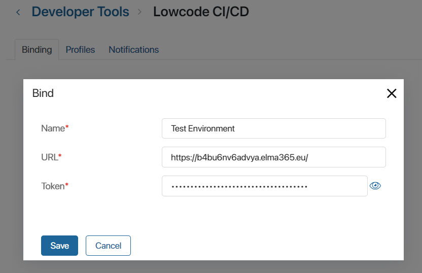
- Name*. Specify the name of the binding to be displayed in the list, for example, Test Environment.
- URL*. Specify the URL of the external company’s home page.
- Token*. Copy the token created in the external company in step 1 and paste it into the field.
- Save the settings.
All bound external companies are displayed on the Binding tab. Configurations or their components can be exchanged with each of them. To change the binding data, click on an entry in the list.
If no exchange profiles have been added for a binding, you can edit its data or delete the binding with an external company. To do this, click on the name of the binding in the list and perform the action on its page. If you see a warning about existing exchange operations, delete them on the Profiles tab and repeat the action.
Create an exchange profile
After binding the external configuration to the company, you can exchange components. For this purpose, an exchange profile is created.
In the profile, you can specify with which external configuration the exchange is performed and define the type of operation (export or import data). Then the objects to be exchanged are checked, and after that you can select all objects included in the configuration or its individual components. The profile also defines the strategy of conflict resolution in the exchange process.
Only one exchange operation can be configured in BRIX SaaS. In the On-Premises edition there are no restrictions on the number of exchange profiles: for example, you can add a profile for each custom solution developed in a dev company.
The created profile can be used to verify the exchange process, compare the configurations of two companies, and run the operation multiple times.
For example, several custom solutions have been developed in the dev environment. You can export them to another company to test the functionality. To do this, create an exchange profile in the test company, include all solutions from the dev environment in it and run the export operation. When new versions of solutions are developed in the dev company, you can transfer them to the test environment by running the same exchange profile.
To create an exchange profile:
- Go to Administration > Developer Tools > Low-code CI/CD and open the Profiles tab.
- In the upper right corner of the page, click +Create and fill in the details of the exchange:
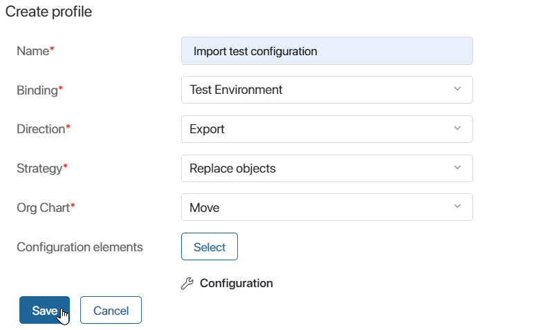
- Name*. Specify the name of the exchange to be displayed in the list of profiles.
- Binding*. Select the external configuration, i.e. the binding created on the Low-code CI/CD page on the Binding tab.
- Direction*. Specify the operation for the exchange profile:
- Import. Components of the external configuration are uploaded into the current company.
- Export. Components of the current configuration are transferred to the bound external company.
- Strategy*. Select a way to resolve conflicts that may arise during the exchange operation. Conflicts can occur if incompatibilities are detected between components of the current and external configurations, for example, the exchange is not performed consistently between component versions or the transferred objects have been changed in both companies. If a conflict is detected in at least one component during the exchange, the operation is performed according to the specified strategy:
- Replace objects. If conflicts occur, the existing components of the target configuration will be completely replaced by the imported objects. This exchange strategy can lead to incorrect operation of the target configuration components. For example, if scripts use app properties that will be deleted as a result of the exchange, such a script will not be executed.
- Keep objects. If conflicting components are found during the exchange, the version of the target configuration is saved and the exchange operation is canceled, i.e. it terminates with an error. For example, different properties are added to the context of one app in the test and prod configurations. A conflict will occur during component exchange and import will not be possible.
- Configuration items. Click Select. Depending on the specified operation, the configuration structure will open: when importing, it shows the composition of the external system, when exporting, it shows the elements of the current company. Select the check box for the components that will be migrated to the other configuration and click Apply.
- Org Chart*. If you choose to exchange the entire configuration in the profile, additionally specify the need to transfer the org chart.
Please note that only components for which export is available can be transferred. For example, if a paid business solution from the BRIX Store is activated in the prod company, it cannot be selected for export to the test environment.
In the process of exchanging bound solutions in Low-code CI/CD you don’t need to create dependencies between them, unlike the process of exporting such solutions to separate .e365 files and then importing the files to another company. If the solutions work together, they are exported in the same exchange profile. Once the operation is complete, all links in the objects will be preserved.
- Save the configured exchange profile.
All created exchange profiles are displayed on the Low-code CI/CD page on the Profiles tab.
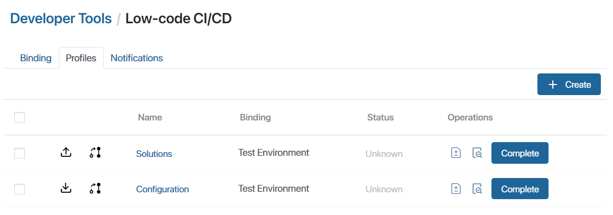
The direction and strategy specified in the profile are marked with icons in the list:
- , . Import, export.
- 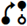, . Keep objects, replace objects.
o remove a profile from the list, check the box next to its name and click the Delete button which appears in the upper right corner of the page.
Compare components of configurations from the exchange profile
Before performing an exchange operation, you can compare the status of the objects selected in the profile for the current and external configurations. Incoming changes will be displayed with statuses, with the help of which you can analyze the result of the exchange operation.
To do this, on the Low-code CI/CD page, open the Profiles tab and click on the icon next to the created exchange profile. In the opened window, the structures of the two configurations will be formed, which will include only those objects that are added to the selected profile:
- Target configuration. It is the configuration structure that will be changed when the exchange profile is executed. For example, during an import operation, the target company will be the current one, and during an export operation, the target one will be an external configuration.
- Changes to the target. These are components from the configuration that will be transferred to the target company.
To see detailed information about the differences between configurations, expand the structure in the changes to the target column. There are workspaces, apps, pages, widgets, scripts, etc. in the list.
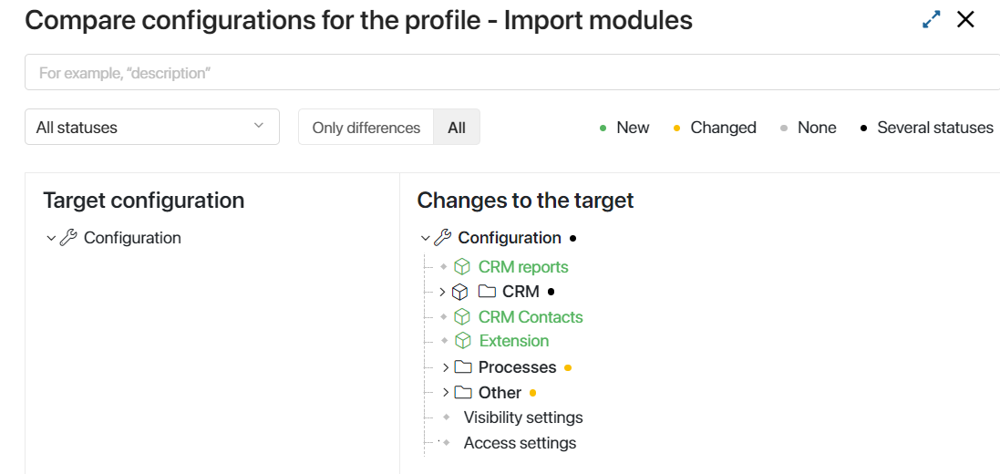
The components are marked with color designations that correspond to the statuses:
These are created components that will be added to the target configuration when the exchange is executed. For example, a new solution from the test environment will be loaded into the BRIX production.
Objects are present in both companies. They have been edited in the exchange company and will be updated in the target configuration. For example, if changes are made to the app form settings in the test environment, the edited objects must be moved to the production company.
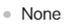 Components are present in the target configuration but are not found in the incoming change structure. After the exchange is executed, the target configuration objects marked with this status won’t change.
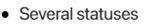 Several differences are found in the selected components. For example, in the test environment, a workspace in the solution is removed and a new one is added, while in the operating company, the previous version of the solution is present.
To view changes in the code of target scripts, click the icon next to its name. In the opened comparison window, you will see the code from the current and external configurations. Navigation through the changes and the number of lines added or removed is displayed on the top panel. For full-screen mode, click the icon in the upper right corner.
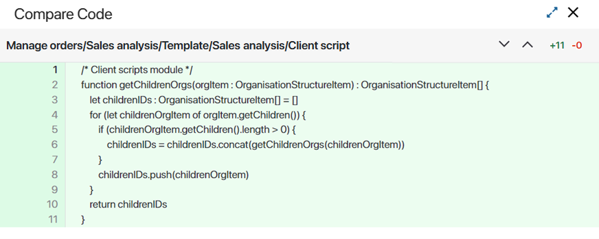
When you close the code window, you will return to the configuration comparison for the selected profile. Here you can search by component name. The comparison result can be filtered by a specific status, and you can display the entire structure or only the components in which differences were found.
Check the exchange profile execution
After creating an exchange profile, you can check if the operation specified in it has been performed. To do this, open the Profiles tab on the Low-code CI/CD page. Click on the icon next to the created exchange profile, and confirm the action.
A compatibility check of the components of the current and external companies will be started. The process is similar to the checks performed during standard export and import operations of any system component.
As a result of the check, errors that interfere with the execution of the operation are detected. For example, the exported or imported components may contain links or dependencies to objects that are not included in the exchange profile.
To learn more about the check process using the example of uploading and downloading a solution, see Import a solution from an .e365 file and Export a solution from an .e365 file.
The current status and result of the check are displayed in the list of exchange profiles in the Status column. By clicking on the status at the end of the check, you will be able to view a report with the result of the check. If errors are detected during the check, it will be impossible to execute the exchange profile.
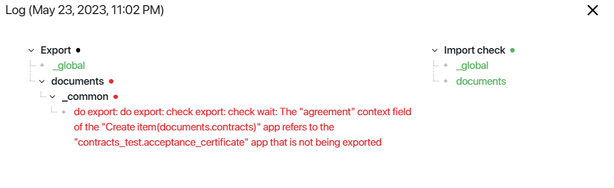
Start component exchange
After comparing the profile configurations, you can start the exchange operation. To do this, click Complete next to the required entry and confirm the action on the Profiles tab. After the transfer is completed, the status of the operation will be displayed in the list of profiles.
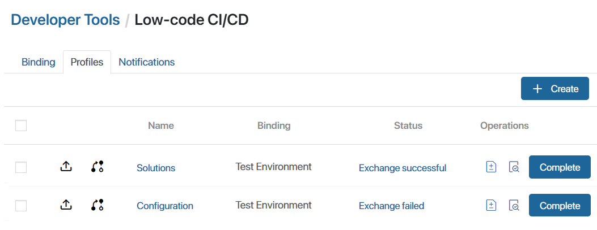
To view the history of the exchange operation, click on the profile status in the table. The opened window displays data on the last exchange performed. If the exchange ended with an error, you can expand the list of components and view detailed information.
Configure notification channel
You can display errors that occurred while performing component exports or imports in the activity stream in a separate channel. To set up the notifications:
- Go to the Messages workspace, create a channel, and configure access rights for its members.
- Open Administration > Developer Tools > Low-code CI/CD and click the Notifications tab.
- In the Channel for notifications field, select the created channel.
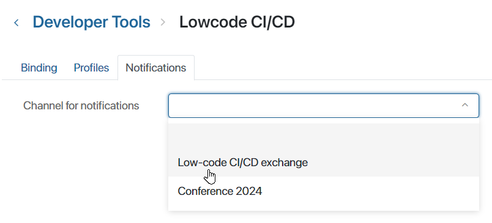
- Click on the Save button that appears on the page to apply the settings.